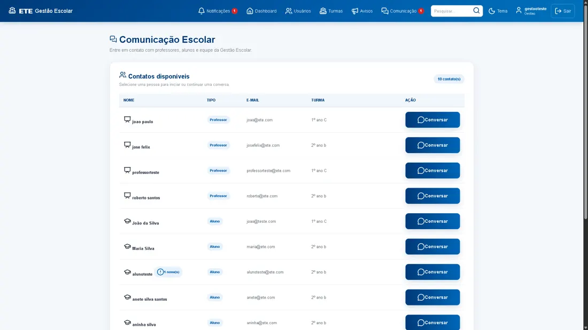

Websites & experiências digitais
Sites institucionais, landing pages e plataformas responsivas com identidade e performance.
Eu sou Matheus, o MX. Desenvolvo experiências digitais, sistemas e automações que transformam problemas reais em soluções inteligentes.
Design, back-end e front-end na mesma mão. Você fala direto comigo, do início ao fim.
Sou Matheus, engenheiro de software e conhecido por MX. Minha missão é ajudar pessoas, empreendedores e empresas a transformar ideias em produtos digitais que funcionam de verdade.
Do planejamento à implementação, cada solução é pensada para ser útil, intuitiva, escalável e preparada para evoluir junto com o negócio.
Ferramentas digitais criadas para simplificar processos, conectar pessoas e impulsionar negócios.
Sites institucionais, landing pages e plataformas responsivas com identidade e performance.
Soluções personalizadas para gerenciar informações, operações e processos empresariais.
Serviços e integrações que conectam plataformas e fazem seus sistemas conversarem.
Fluxos sob medida para reduzir tarefas repetitivas e liberar tempo para o que importa.
Projetos reais, construídos com propósito. Cada linha de código representa uma ideia que ganhou forma.
Sistema web voltado à organização e gestão de rotinas de um ambiente odontológico, com foco em centralizar informações e facilitar o dia a dia.
Explorar repositório ↗Aplicação para apresentar produtos de forma organizada e intuitiva, facilitando a navegação, descoberta e consulta de itens.
Explorar repositório ↗
Sistema de gestão e comunicação da comunidade escolar da ETE Ariano Suassuna. Projeto desenvolvido em equipe, com módulos para usuários, turmas, avisos e comunicação.
Explorar repositório ↗Tem um desafio, uma ideia ou um projeto em mente? Vamos conversar e descobrir como a tecnologia pode ajudar.
Iniciar um projeto ↗